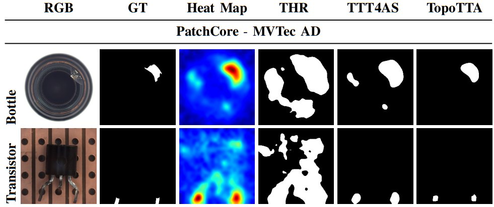

I build machine learning models that keep working when data is scarce, noisy or shifted.
Much of my work brings topology into deep learning: persistent homology, cell and simplicial complexes and hypergraphs give a network structure it can rely on when pixel-level cues fail. I pair this with hyperspectral and multimodal sensing, where I started, and apply it to crops and food, medical imaging, industrial inspection and radar.
I am a Research Fellow at La Trobe University with adjunct appointments at CSIRO and the Australian National University. I co-lead the CSIRO ML Workshop Series, supervise PhD and honours students, and received my PhD from Griffith University for work on 3D computer vision from hyperspectral images.
One point cloud at four scales. As ε grows, edges and triangles fill in; small loops die quickly while the large one persists. That persistence is the signal topological deep learning keeps. Colour follows the visible spectrum, a nod to hyperspectral imaging.
TopoOT accepted at NeurIPS 2026 as a main-conference poster. See you in Sydney.
“Learnable Persistent Topology for Multi-View Radar Semantic Segmentation” accepted at the NeurIPS 2026 workshop on Symmetry and Geometry in Neural Representations.
Papers at ECCV 2026 (structurally consistent multi-view radar segmentation) and IEEE JBHI (expert fusion for blastocyst assessment and IVF decision support).
MM-HCAN published in the IEEE Sensors Journal; HyperEcho, on higher-order representations for automotive radar, at IEEE PerCom 2026.
Seed funding as lead for SpectraResist-AI, detecting herbicide resistance in ryegrass, and a La Trobe Research Infrastructure grant for a high-speed camera.
MAFR and Split-Fuse-Transport at DICTA 2025; Hierarchical Spatial Mamba at ACPR 2025; BioNet and NeFF at WACV 2025.
Our review of topological deep learning appeared in Artificial Intelligence Review, and TopoX in the Journal of Machine Learning Research.
Runner-up paper award at DICTA 2023 for contrastive-aware ViT for weakly supervised segmentation.
Research
components (H₀) loops (H₁)
Points far from the diagonal are features that persist across scales.
Topological deep learning
Networks that reason over shape as well as signal: persistence-based pseudo-labels, optimal transport between persistence diagrams, and message passing on hypergraphs and cell complexes. This includes a widely read review of the field and the TopoX software suite.
Hyperspectral and multimodal sensing
Hundreds of narrow bands reveal what RGB cannot: protein content in chickpea flour, contamination in meat, early disease in sugarcane and herbicide resistance in ryegrass. I work on weak-signal unmixing, spectral 3D vision and fusion with lidar and point clouds.

Reliable AI under real conditions
Test-time adaptation and out-of-distribution robustness for models deployed where the data moves: industrial anomaly segmentation, radar perception, motor fault diagnosis and embryo assessment for IVF.
Featured work
NeurIPS 2026
Topology-Aware Optimal Transport for Source-Free Test-Time Adaptation in Anomaly Segmentation
A. Zia, U. Ali, U. Ramzan, A. Rehman, A. Khamis, W. Xiang
TopoOT chains optimal transport across persistence diagrams from different thresholds and filtrations, then trains a light head online on the features that stay stable. Up to +24.1% mean F1 over the next best method on 2D benchmarks.
Learning Topology-Aware Representations via Test-Time Adaptation for Anomaly Segmentation
A. Zia, U. Ali, A. Rehman, U. Ramzan, K. Han, M. Faheem, S. Qureshi, W. Xiang
TopoTTA replaces threshold heuristics with persistent homology on anomaly maps, producing pseudo-labels that keep defects connected. About 15% higher F1 on average across five 2D and 3D benchmarks.
Hypergraph Contrastive Sensor Fusion for Multimodal Fault Diagnosis in Induction Motors
U. Ali, A. Zia, W. Ali, U. Ramzan, A. Rehman, M. T. Chaudhry, W. Xiang
MM-HCAN builds hypergraphs within and across sensor modalities and trains them contrastively, diagnosing bearing, stator and rotor faults together. Up to 99.82% accuracy with strong cross-domain transfer.
Learning Topology-Aware Representations via Test-Time Adaptation for Anomaly Segmentation.A. Zia, U. Ali, A. Rehman, U. Ramzan, K. Han, M. Faheem, S. Qureshi, W. Xiang.IEEE TPAMI.paperarXivcode
Topology-Aware Optimal Transport for Source-Free Test-Time Adaptation in Anomaly Segmentation.A. Zia, U. Ali, U. Ramzan, A. Rehman, A. Khamis, W. Xiang.NeurIPS.arXivcode
Learning Structurally Consistent Representations for Multi-view Radar Semantic Segmentation.A. Zia, M. U. Ramzan, A. Khamis, U. Ali, A. Rehman.ECCV.
Expert Fusion Network for Automated Blastocyst Morphology and IVF Decision Support.A. Zia, S. Qureshi, F. Ansarizadeh, et al.IEEE Journal of Biomedical and Health Informatics.
Hypergraph Contrastive Sensor Fusion for Multimodal Fault Diagnosis in Induction Motors.U. Ali, A. Zia, W. Ali, U. Ramzan, A. Rehman, M. T. Chaudhry, W. Xiang.IEEE Sensors Journal.arXivcode
HyperEcho: Structured Higher Order Representation for Automotive Radar Semantic Segmentation.A. Khamis, M. U. Ramzan, U. Ali, A. Zia.IEEE PerCom.
A Review on Vision-Centric Coarse to Fine-Grained Animal Action Recognition.A. Zia, R. Sharma, A. Khamis, U. Ali, X. Li, et al.Artificial Intelligence Review.arXiv
WS-Net: Weak-Signal Representation Learning and Gated Abundance Reconstruction for Hyperspectral Unmixing.Z. Long, A. Zia, G. Fu, V. Rolland, J. Zhou.arXiv preprint.arXiv
Representation Geometry as a Diagnostic for Out-of-Distribution Robustness.A. Zia, F. Hazratian.arXiv preprint.arXiv
2025
2D–3D Feature Fusion via Cross-Modal Latent Synthesis and Attention-Guided Restoration for Industrial Anomaly Detection.U. Ali, A. Zia, A. Rehman, U. Ramzan, Z. Hassan, T. Sattar, J. Wang, W. Xiang.DICTA.arXivcode
Hierarchical Spatial Mamba Framework for Point Cloud Classification.Y. Sun, A. Zia, Z. Long, Z. Qiu, W. Xiang, J. Zhou.ACPR.
BioNet and NeFF: Crop Biomass Prediction from Point Clouds to Drone Imagery.X. Li, Z. Hayder, A. Zia, et al.WACV.arXiv
Advances in Machine Learning for Wetland Classification: A Comprehensive Survey of Methods and Applications.D. Effah, A. Zia, M. Awrangjeb, Y. Gao, K. Sarpong.Artificial Intelligence Review.
Unlocking Chickpea Flour Potential: AI-Powered Prediction for Quality Assessment and Compositional Characterisation.A. Zia, M. Husnain, S. Buck, J. Richetti, E. Hulm, J. P. Ral, V. Rolland, X. Sirault.Current Research in Food Science.
2024
Topological Deep Learning: A Review of an Emerging Paradigm.A. Zia, A. Khamis, J. Nichols, U. B. Tayab, Z. Hayder, et al.Artificial Intelligence Review.paperarXiv
TopoX: A Suite of Python Packages for Machine Learning on Topological Domains.M. Hajij, M. Papillon, F. Frantzen, et al., including A. Zia.Journal of Machine Learning Research.papercode
A New Hyperspectral Unmixing Benchmark for Weak Signal Meat Contamination Detection.Z. Long, A. Zia, J. Nelis, V. Rolland, J. Zhou.DICTA.
2023
ICML 2023 Topological Deep Learning Challenge: Design and Results.M. Papillon, M. Hajij, et al., including A. Zia.PMLR, TAG-ML Workshop.paper
CVB: A Video Dataset of Cattle Visual Behaviors.A. Zia, R. Sharma, R. Arablouei, G. Bishop-Hurley, J. McNally, N. Bagnall, et al.CVPR Workshops.arXiv
Contrastive-Aware ViT for Weakly Supervised Semantic Segmentation.P. Pativada, Z. Hayder, A. Zia, N. Barnes.DICTA.Runner-up paper award
Earlier
Exploring Chromatic Aberration and Defocus Blur for Relative Depth Estimation from Monocular Hyperspectral Image.A. Zia, J. Zhou, Y. Gao.IEEE Transactions on Image Processing, 2021.paper
Spectral-Spatial Scale Invariant Feature Transform for Hyperspectral Images.S. L. Al-Khafaji, J. Zhou, A. Zia, A. W. C. Liew.IEEE Transactions on Image Processing, 2018.
3D Reconstruction from Hyperspectral Images.A. Zia, J. Liang, J. Zhou, Y. Gao.WACV, 2015.
3D Plant Modelling via Hyperspectral Imaging.J. Liang, A. Zia, J. Zhou, X. Sirault.ICCV Workshops, 2013.